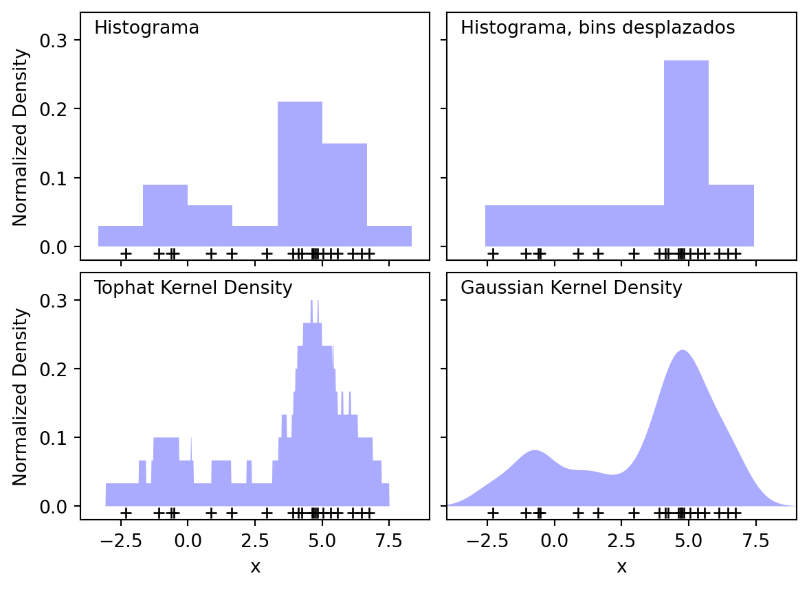
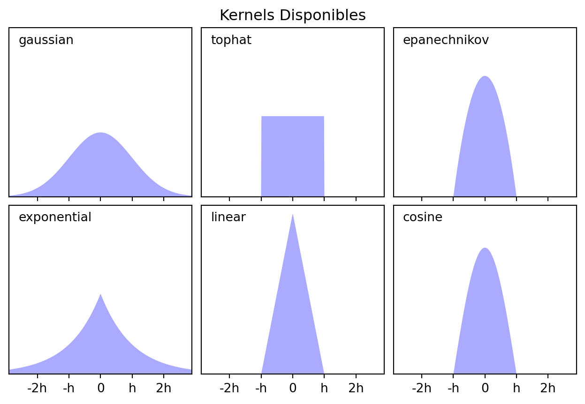
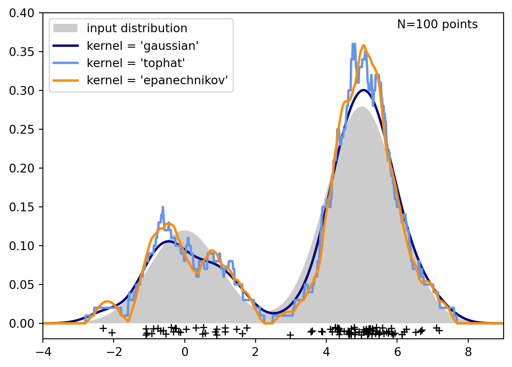

#Importar las librerías
import matplotlib.pyplot as plt
import numpy as np
from scipy.stats import norm
from sklearn.neighbors import KernelDensity
# ----------------------------------------------------------------------
# Plot the progression of histograms to kernels
np.random.seed(1)
N = 20
X = np.concatenate(
(np.random.normal(0, 1, int(0.3 * N)), np.random.normal(5, 1, int(0.7 * N)))
)[:, np.newaxis]
X_plot = np.linspace(-5, 10, 1000)[:, np.newaxis]
bins = np.linspace(-5, 10, 10)
fig, ax = plt.subplots(2, 2, sharex=True, sharey=True)
fig.subplots_adjust(hspace=0.05, wspace=0.05)
# Histograma
ax[0, 0].hist(X[:, 0], bins=bins, fc="#AAAAFF", density=True)
ax[0, 0].text(-3.5, 0.31, "Histograma")
# Histograma con las particiones desplazadas
ax[0, 1].hist(X[:, 0], bins=bins + 0.75, fc="#AAAAFF", density=True)
ax[0, 1].text(-3.5, 0.31, "Histograma, bins desplazados")
# tophat KDE
kde = KernelDensity(kernel="tophat", bandwidth=0.75).fit(X)
log_dens = kde.score_samples(X_plot)
ax[1, 0].fill(X_plot[:, 0], np.exp(log_dens), fc="#AAAAFF")
ax[1, 0].text(-3.5, 0.31, "Tophat Kernel Density")
# Gaussian KDE
kde = KernelDensity(kernel="gaussian", bandwidth=0.75).fit(X)
log_dens = kde.score_samples(X_plot)
ax[1, 1].fill(X_plot[:, 0], np.exp(log_dens), fc="#AAAAFF")
ax[1, 1].text(-3.5, 0.31, "Gaussian Kernel Density")
for axi in ax.ravel():
axi.plot(X[:, 0], np.full(X.shape[0], -0.01), "+k")
axi.set_xlim(-4, 9)
axi.set_ylim(-0.02, 0.34)
for axi in ax[:, 0]:
axi.set_ylabel("Normalized Density")
for axi in ax[1, :]:
axi.set_xlabel("x")
# ----------------------------------------------------------------------
# Plot all available kernels
X_plot = np.linspace(-6, 6, 1000)[:, None]
X_src = np.zeros((1, 1))
fig, ax = plt.subplots(2, 3, sharex=True, sharey=True)
fig.subplots_adjust(left=0.05, right=0.95, hspace=0.05, wspace=0.05)
def format_func(x, loc):
if x == 0:
return "0"
elif x == 1:
return "h"
elif x == -1:
return "-h"
else:
return "%ih" % x
for i, kernel in enumerate(
["gaussian", "tophat", "epanechnikov", "exponential", "linear", "cosine"]
):
axi = ax.ravel()[i]
log_dens = KernelDensity(kernel=kernel).fit(X_src).score_samples(X_plot)
axi.fill(X_plot[:, 0], np.exp(log_dens), "-k", fc="#AAAAFF")
axi.text(-2.6, 0.95, kernel)
axi.xaxis.set_major_formatter(plt.FuncFormatter(format_func))
axi.xaxis.set_major_locator(plt.MultipleLocator(1))
axi.yaxis.set_major_locator(plt.NullLocator())
axi.set_ylim(0, 1.05)
axi.set_xlim(-2.9, 2.9)
ax[0, 1].set_title("Kernels Disponibles")
# ----------------------------------------------------------------------
# Plot a 1D density example
N = 100
np.random.seed(1)
X = np.concatenate(
(np.random.normal(0, 1, int(0.3 * N)), np.random.normal(5, 1, int(0.7 * N)))
)[:, np.newaxis]
X_plot = np.linspace(-5, 10, 1000)[:, np.newaxis]
true_dens = 0.3 * norm(0, 1).pdf(X_plot[:, 0]) + 0.7 * norm(5, 1).pdf(X_plot[:, 0])
fig, ax = plt.subplots()
ax.fill(X_plot[:, 0], true_dens, fc="black", alpha=0.2, label="input distribution")
colors = ["navy", "cornflowerblue", "darkorange"]
kernels = ["gaussian", "tophat", "epanechnikov"]
lw = 2
for color, kernel in zip(colors, kernels):
kde = KernelDensity(kernel=kernel, bandwidth=0.5).fit(X)
log_dens = kde.score_samples(X_plot)
ax.plot(
X_plot[:, 0],
np.exp(log_dens),
color=color,
lw=lw,
linestyle="-",
label="kernel = '{0}'".format(kernel),
)
ax.text(6, 0.38, "N={0} points".format(N))
ax.legend(loc="upper left")
ax.plot(X[:, 0], -0.005 - 0.01 * np.random.random(X.shape[0]), "+k")
ax.set_xlim(-4, 9)
ax.set_ylim(-0.02, 0.4)
plt.show()

